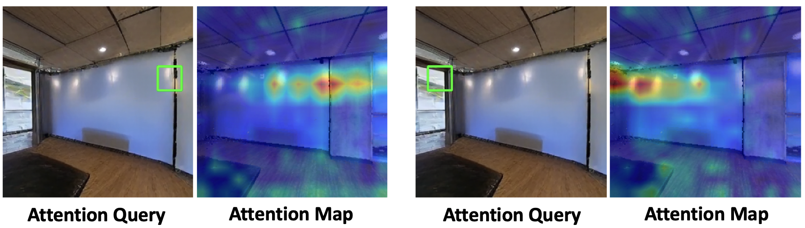

Attention Maps
Given the output image in the future and the input image, we visualize bias on the input image corresponding to a patch on the output image. This visualization indicates when the patch is synthesized, what information contributes the most in the input image. We can see most contributions come from the patches in nearby locations along the trajectory.
